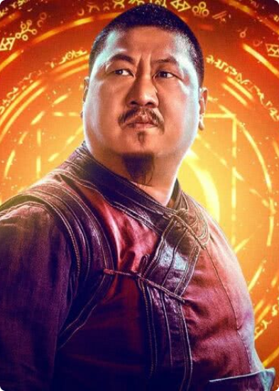
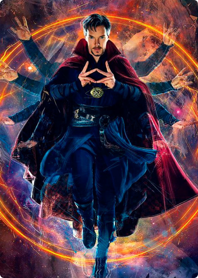
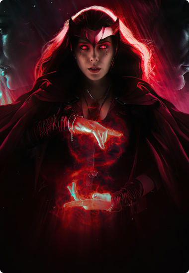

Wong
Wong é um personagem fictício que aparece nos quadrinhos americanos publicados pela Marvel Comics. Ele é o ajudante e valet do Doutor Estranho, o Feiticeiro Supremo da Terra.
Doutor Estranho
Stephen Strange, perdeu o controle de suas mãos após um acidente de carro. Um ancião vê o potencial mágico existente nele e passa a treiná-lo nas artes místicas.
Wanda
Wanda conhecida tambeém como Feiticeira Escarlate: uma mutante, ou não, com poderes de “manipulação das probabilidades” e envolvida com magia.